Cattails
Scientific name: Typha latifolia
Abundance: common
What: Tubers, shoots, male portion of flower, pollen
How: Tuber starch granules are removed by hand from fibers, young shoots cut from tubers, older stems can be peeled back to get soft, white edible pith, male (top) part of flower steamed before it become fluffy, pollen from male section is shaken into paper bag from flower and use as flour
Where: Shallow water
When: Tubers in winter, shoots in spring/summer, pollen and flowers in spring
Nutritional Value: Young shoots have low amounts of minerals. Pollen is high in protein. Tubers are high in calcium, iron, potassium, and carbohydrates.
Other uses: Fluff is good tinder and insulation, leaves can be woven into baskets and used to thatch huts.
Dangers: Fluff may cause skin irritation. Wash thoroughly before eating parts raw so as to avoid picking up any infectious, water-borne microbes.
Bullrushes/cattails
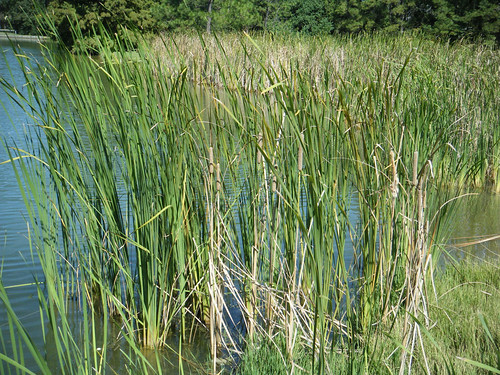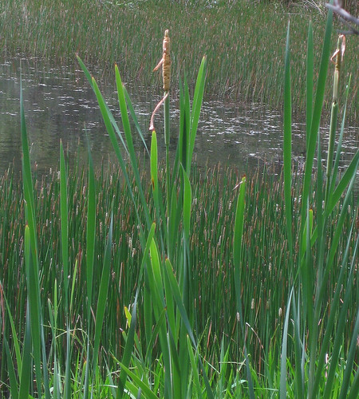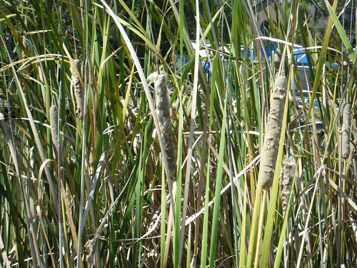Close-up of cattail bases.
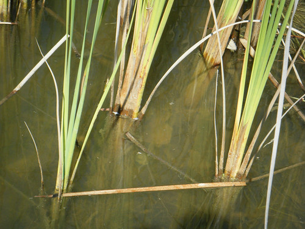Cattail rhizome and new shoot at its tip.
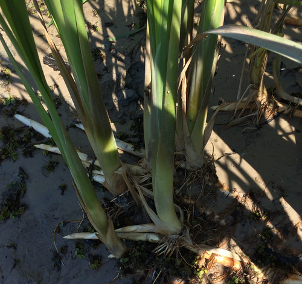Cattail tip, best cooked like asparagus.
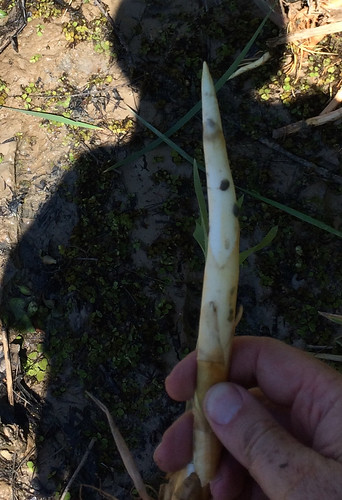Grilling up some cattail rhizome along with brats.
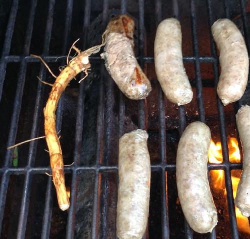Peel off the outer, charred skin to chew up the starchy core.
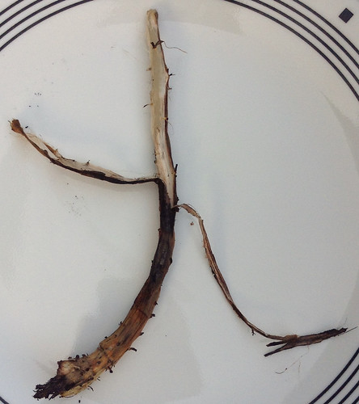A tender shoot.
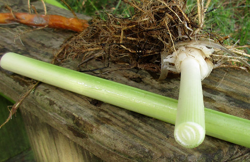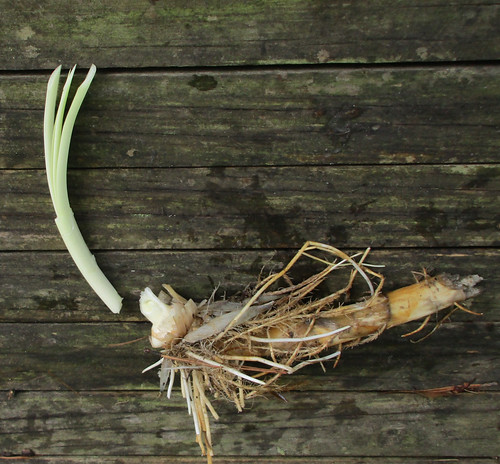Flowers (brown top is male portion, green part below male is female section)
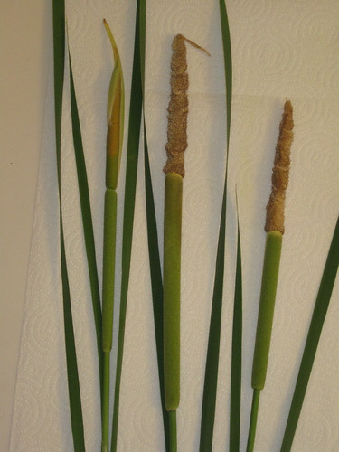Pollen coming from the male portion of the cattail flowerhead.
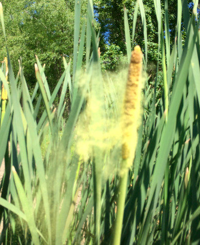Cattails are one of the most talked about wild foods to the point of even being called the "grocery store of the wild". Everything about them is edible at some point or another, usually when the particular part first appears.
Working through the seasons, in wintertime (as well as the rest of the year) the thick rhizomes
are roasted or baked then peeled. The white, stringy center mass is then chewed to get the cooked starch they contain. They have a Graham cracker like flavor but spit out the stringy fibers once all the flavor is gone. The easiest way to cook these rhizomes is by tossing them on hot coals and occasionally flipping it until the outer surface begins to char and blacken.
In early spring the rhizome tips turn upwards and grow as new plants. These shoots are collected and treated like asparagus. I strongly recommend cooking the shoots to avoid getting sick due to water-borne microbes. The white, tubular shoots, before they open up into separate leaves are best. The white core is the best, peel off any green leaves to get to the yummy center.
In late spring the plants have matured enough to produce their flowers. These primitive plants produce separate male and female flowers with the male flowers lining the top portion of the stalk and the female flowers directly underneath. Clip off the male flowers and treat them like tiny ears of corn, being a good addition to food either raw or cooked.
Cattail pollen is produced in amazing quantities in late spring after the flowers mature. This pollen is a ready-to-use flour substitute and can be collected by shaking the flowers in a bag or other container to collect it.
During the summer months you are limited to cattail rhizomes as described earlier. Occasionally you may find a young, out-of-season, edible shoot. At this time the tops develop their fluffy seedbeds. This fluff, when dry, makes a good tinder for starting fires. It can be used as an insulation but it actually has tiny needles which will irritate your skin. A protective layer of fabric needs to be between you and the insulating fluff otherwise you'll develop a rash.
In the fall when all the above-water portions of the cattails turn brown the rhizomes will be at their thickest and most starch-filled growth. They'll remain this way until the stored starch is required to build new plant matter in the spring.